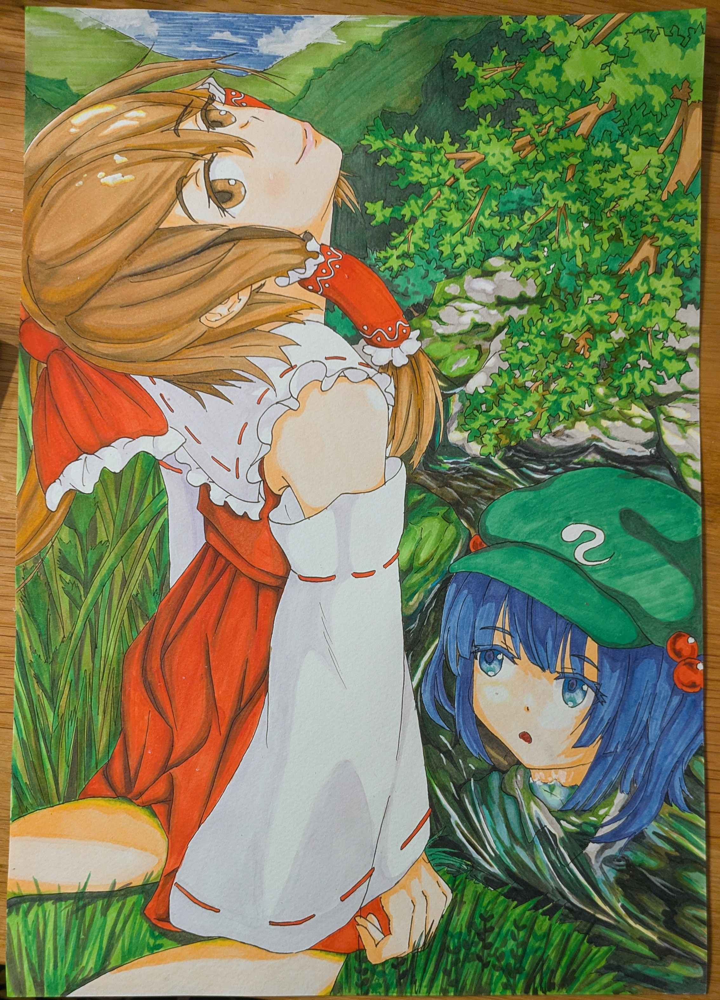

プロフィール
高専で電気回路・電子回路・プログラミングを学びながら、デジタルアートやゲーム制作に取り組んでいます。 技術とデザインを組み合わせ、ユーザーにとってわかりやすいコンテンツ制作を目標としています。 好奇心旺盛で新しい分野にも積極的に挑戦し、継続的にスキルを磨いています。
強み
- 継続力：10年以上のバレーボール継続と日々の自主練習
- 創造力：デジタルアート・ゲーム制作での表現力
- 課題解決力：試行錯誤を繰り返し改善できる力
- チームワーク：後輩指導やチーム運営への貢献
- 柔軟性：状況に応じた対応・役割調整
主要実績
バレーボール部での活動
週4〜5日の練習に加え自主練習を継続。後輩指導では動画を活用し、理解しやすい指導を実施。 チーム内の信頼関係向上に貢献。
ファクトリズム2025 広告制作
市および地元企業と連携し、企業紹介イベントの広告制作に参加。 職員との打ち合わせを重ね、提案したデザインが採用され、イベント広報に貢献。
デジタルアート・制作活動
模写を数百枚行い基礎力を習得後、デジタル制作へ発展。 表現力と構成力を高め、独自の作品制作に取り組んでいる。
スキル
- プログラミング（基礎）
- 電気回路・電子回路
- デジタルアート・イラスト制作
- プレゼンテーション
- Word / Excel
資格・学習
- ITパスポート（学習中）
- カラーコーディネーター（学習中）
- 福祉住環境コーディネーター（学習中）
目指すキャリア
技術とデザインを融合し、ユーザーにとって直感的で理解しやすいコンテンツを提供できるエンジニア・クリエイターを目指しています。 将来的には、社会課題に対して価値を生み出せるプロジェクトに関わりたいと考えています。
現在の所属
大阪公立大学工業高等専門学校 知能情報コース４年 在籍
作品ギャラリー

ひまわり（デジタル油絵）

ひまわり（作成タイムラプス）

ファクトリズム作品（ファクトリズムの提出作品）

アナログ絵（copic）
※画像ファイル名を自分の作品に変更してください